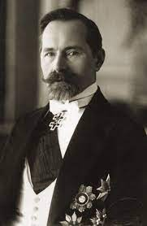
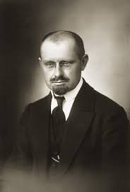
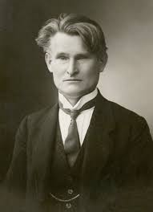
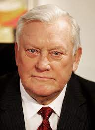
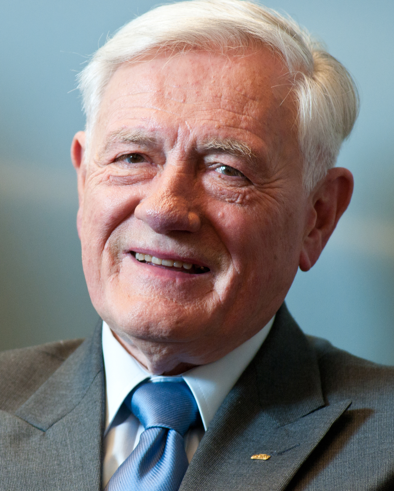
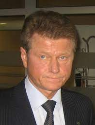
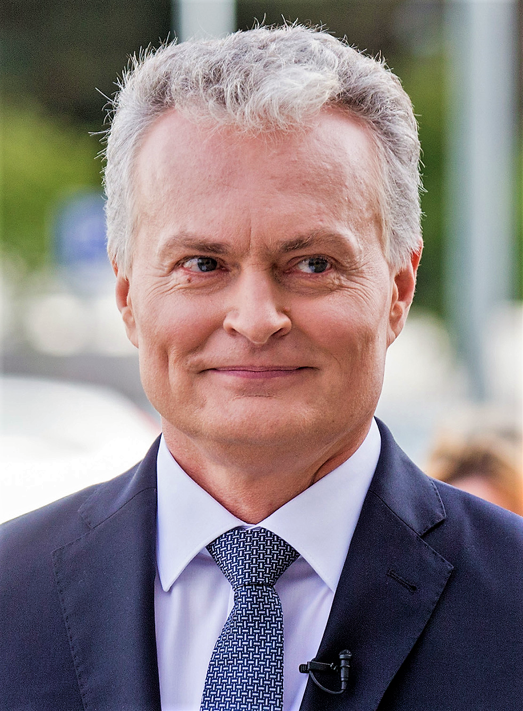

|
| Nuotrauka |
Trumpa
biografija |
 |
Antanas
Smetona. Gimė 1874 m. rugpjūčio 10 d. Rusija
Užulėnis, Taujėnų valsčius. Baigė Taujėnų pradinę mokyklą,
privačiai mokėsi Ukmergėje ir Liepojoje (Latvija), 1893 m.
baigė Palangos progimnaziją, išlaikė egzaminus į Žemaičių
kunigų seminariją Kaune, bet persigalvojo ir įstojo į
Mintaujos gimnaziją. 1897 m. baigė Peterburgo gimnaziją.
Įstojo į Peterburgo universiteto Teisės fakultetą, du
kartus iš jo šalintas, suimtas, trumpai kalintas. Lietuvių
demokratų partijos narys. 1905 m. gruodžio 4–5 d. dalyvavo
Didžiojo Vilniaus Seimo darbe. Pirmojo pasaulinio karo
metais buvo Lietuvių draugijos nukentėjusiems dėl karo
šelpti Centro Komiteto I vicepirmininkas, pirmininkas.
Mirė 1944 m. sausio 9 d. (69 metai). Prezidentavo: 1926 m.
gruodžio 19 d. – 1940 m. birželio 15 d. |
 |
Aleksandras
Stulginskis. Gimė 1885 m. vasario 26 d. Kutaliai,
Kaltinėnų valsčius, Raseinių apskritis, Rusijos imperija.
Aleksandras buvo jauniausias – 12-tas vaikas bežemių
valstiečių Marijonos ir Dominyko Stulginskių šeimoje.
Pirmojo pasaulinio karo pradžioje atsidūrė Vilniuje,
Lietuvių draugijos nukentėjusiems dėl karo šelpti vienas
vadovų Vilniuje. Dėstė gamtos mokslus lietuvių
gimnazijoje, vadovavo Lietuvių pedagoginiams kursams, buvo
Vilniaus daržų steigėjas. 1917 m. rugsėjo 18–22 d.
dalyvavo lietuvių konferencijoje Vilniuje. Išrinktas į
Lietuvos Tarybą (vėliau Valstybės Taryba). 1918 m. vasario
16 d. pasirašė Lietuvos Nepriklausomybės aktą. Valstybės
Tarybos Tremtinių ir belaisvių grąžinimo komisijos narys
ir vadovas. Grįžęs į Lietuvą paskirtas Trakų apskrities
Alytaus rajoniniu agronomu. Mirė 1969 m. rugsėjo 22 d. (84
metai). Prezidentavo: 1920 m. birželio 19 d. – 1926 m.
birželio 7 d. |
 |
Kazys
Grinius. Gimė 1866 m. gruodžio 17 d. Rusija Selemos
Būda, Rusijos imperija. Lietuvos politikas, visuomenės ir
kultūros veikėjas, humanistas, vienas pirmųjų Lietuvos
demokratų, varpininkas, gydytojas, švietėjas, visuomenės
sveikatos aktyvistas, publicistas, knygnešys. Steigiamojo
Seimo komiteto, rengusio Lietuvos Konstituciją,
pirmininkas, Steigiamojo, I, II ir III Seimų narys.
Šeštasis Lietuvos premjeras (1920 m. lapkričio 19 d. –
1922 m. sausio 18 d.), pirmasis premjeras, vadovavęs
parlamentinei Lietuvos vyriausybei. Trečiasis Lietuvos
Respublikos Prezidentas (1926 m. birželio 7 d. – gruodžio
17 d.). Paskutinis demokratiškai išrinktas tarpukario
Lietuvos Prezidentas. Mirė 1950 m. birželio 4 d. (83
metai). . Prezidentavo: 1926 m. birželio 7 d. – 1926 m.
gruodžio 17 d. |
 |
Algirdas
Brazauskas. Gimė 1932 m. rugsėjo 22 d. Rokiškis.
Mirė 2010 m. birželio 26 d. (77 metai). Pirmasis
nepriklausomybę atkūrusios Lietuvos prezidentas, LKP CK
pirmasis sekretorius. Pradėjęs karjerą kaip jaunas
specialistas, A. Brazauskas komunistų partijoje sparčiai
kopė hierarchijos laiptais ir 1988-aisiais, būdamas
56-erių, tapo aukščiausiu sovietų valdžios okupuotoje
Lietuvoje vykdytoju – LKP CK I sekretoriumi. Šį postą jis
užėmė iki nepriklausomybės paskelbimo 1990-ųjų kovo 11 d.
Vėliau jis vadovavo nepriklausomai Lietuvai kaip
prezidentas (šias pareigas laikinai ėjo 1992–1993,
išrinktas kadencijai 1993–1998), vėliau vadovavo šalies
vykdomajai valdžiai kaip ministras pirmininkas
(2001–2006). Prezidentavo: 1993 m. vasario 25 d. –
1998 m. vasario 25 d. |
 |
Valdas
Adamkus. Gimė 1926 m. lapkričio 3 d. (96 metai)
Kaunas, Lietuva. Politikas, aplinkosaugininkas, JAV
lietuvių visuomenės veikėjas. Gimė tarnautojų šeimoje.
Tėvas – Ignas Adamkavičius, Nepriklausomybės kovų
savanoris, vienas pirmųjų Lietuvos karo aviacijos mokyklos
vadovų, vėliau – Kauno geležinkelio stoties policijos
viršininkas. Motina dirbo Susisiekimo ministerijoje. Lankė
Jono Jablonskio pradžios mokyklą, mokėsi Kauno „Aušros"
gimnazijoje. Karo metais dalyvavo rezistencinėje veikloje
prieš nacius kartu su mokslo draugais leisdamas pogrindinį
laikraštį „Jaunime, budėk!“. Pirmąjį kartą nuo artėjančios
Raudonosios armijos su tėvais į Vokietiją pasitraukė 1944
m. liepos mėnesį. Tačiau šeimai susiradus prieglobstį
netoli Vroclavo (tuometinio Breslau) įkurtoje karo
pabėgėlių stovykloje, grįžo atgal į Lietuvą prisijungti
prie Žemaitijoje formuojamos lietuvių savanorių Tėvynės
apsaugos rinktinės kovai prieš Raudonąją armiją.
Prezidentavo: 1998 m. vasario 26 d. - 2003 m. vasario 26
d. ir 2004 m. liepos 12 d. - 2009 m. liepos 12 d. |
 |
Rolandas
Paksas. Gimė 1956 m. birželio 10 d. (67 metai)
Telšiai. Aviatorius, politikas, 2000–2001 m. Lietuvos
ministras pirmininkas.Pirmasis Europos šalies vadovas,
nušalintas apkaltos proceso metu. Vienturtis sūnus Felikso
ir Elenos Paksų šeimoje. 1974 m. baigė Telšių Žemaitės
vidurinę mokyklą. 1974–1979 m. studijavo Vilniaus
inžineriniame statybos institute (dab. VGTU), įgijo
pramoninės ir civilinės statybos inžinieriaus specialybę.
1979–1985 m. dirbo lakūnu instruktoriumi. 1984 m. baigė
Leningrado civilinės aviacijos akademiją, įgijo
inžinieriaus piloto specialybę. 1985–1991 m. Vilniaus S.
Dariaus ir S. Girėno aeroklubo, pavaldaus Lietuvos SSR
SDAALR, viršininkas. Dalyvavo skraidymo akrobatikos
varžybose, du kartus Lietuvos aukštojo pilotažo čempionas
(daugiakovė, 1980 m., 1981 m.). Prezidentavo: 2003 m.
vasario 26 d. – 2004 m. balandžio 6 d. |
 |
Dalia
Grybauskaitė. Gimė 1956 m. kovo 1 d. (67 metai)
Vilnius. 1975–1976 m. LTSR valstybinės filharmonijos Kadrų
skyriaus inspektorė. Leningrado kailių fabriko „Rot-Front“
darbininkė, laborantė, 1983 m. LTSR mokslų akademijos
atsakingoji sekretorė, 1983–1984 m. – Vilniaus aukštosios
partinės mokyklos Žemės ūkio kabineto vedėja, 1985–1990 m.
birželio mėn. – Politinės ekonomijos katedros dėstytoja.
1990–1991 m. Ekonomikos instituto mokslinė sekretorė, 1991
m. LRV programų vadovė. 1991–1993 m. LR tarptautinių
ekonominių santykių ministerijos Europos departamento
direktorė, 1993–1994 m. LR užsienio reikalų ministerijos
Ekonomikos departamento direktorė, (PHARE ir G–24)
Pagalbos Lietuvai koordinavimo komisijos pirmininkė,
Laisvosios prekybos sutarties su ES derybų vadovė.
Prezidentavo: 2009 m. liepos 12 d. – 2019 m. liepos 12 d. |
 |
Gitanas
Nausėda. Gimė 1964 m. gegužės 19 d. (59 metai)
Klaipėda. 1970–1981 m. mokėsi Klaipėdos 5-oje vidurinėje
mokykloje, nuo 1971 m. Klaipėdos muzikos mokykloje,
dainavo berniukų chore „Gintarėlis“. Vasaras leisdavo pas
senelius Būdviečių kaime. 1981 m. neišlaikęs matematikos
egzamino ir neįstojęs į ekonomiką Vilniaus universitete,
dirbo sanitaru Klaipėdos vaistų sandėlyje. 1982–1987 m.
studijavo VU Pramonės ekonomikos fakulteto aspirantas.
1990–1992 m. per DAAD programą išvyko tęsti mokslinį darbą
į Vokietiją, Manheimo universitetą. 1992–1993 m.
Ekonomikos ir privatizacijos instituto vyresnysis mokslo
darbuotojas. 1993 m. VU apsigynė socialinių mokslų daktaro
disertaciją tema „Pajamų politikos kryptys infliacijos ir
stagfliacijos sąlygomis (Lietuvos pavyzdžiu)“.
Prezidentuoja: 2019 m. liepos 12 d. |